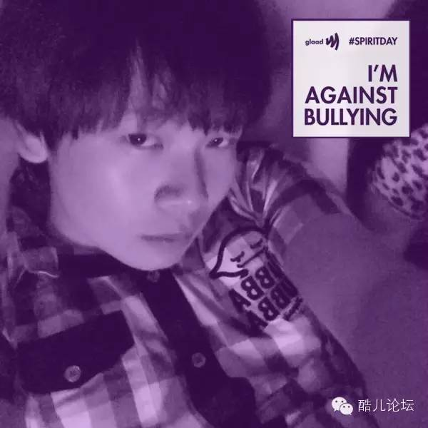
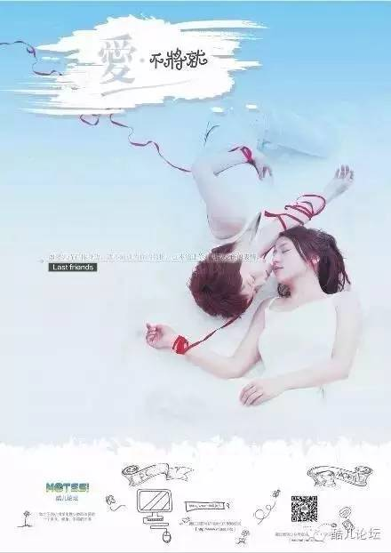
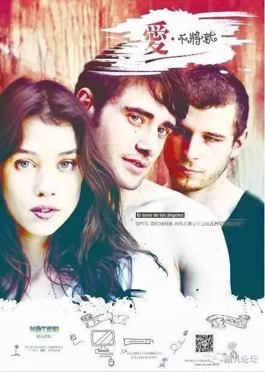
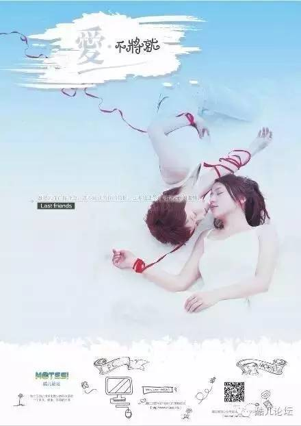
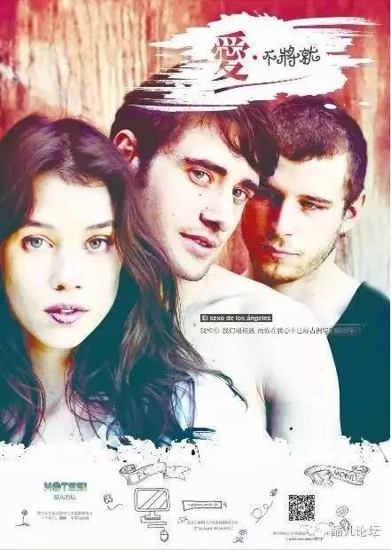
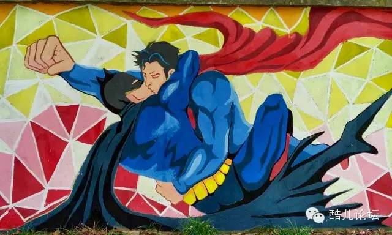

志愿者|我的梦想很简单，你愿意来陪我一起圆梦嘛？
motss2002
杭州酷儿论坛（motss.info）致力于为杭州及周边地区学生性少数人群提供一个多元、健康、平等的环境，促进自我认同和社会认可。
昨天的推送看到了嘛！？啧啧啧，为了纳新我们站长也是拼了，那么多独家私房照 & 一箩筐真心话，带来了我们报名人数的突飞猛进~~~
但是，我们仍然欲求不满！
昨天主打热血牌，今日主打温情牌！壮哉我大酷儿，各式花样美男，任君挑~~~
闲话到此，马上为大家推出今日访谈嘉宾！

本期嘉宾——Dale
酷儿论坛执行主任/项目部负责人。
浙大本科三年级在读，全专业唯一的XY染色体。【怪不得6天后还得过节】
高贵但亲切的设基狮：屡被同行吐槽手太慢，却一人承包近期酷儿全部海报设计！【心疼ING，所以爱设计的你们，快来吧！】
少女心爆棚的他，作品自然也是充满了可爱和温暖~~
有没有觉得下面的海报很眼熟？他们都出自同一个人哦~
  
 
什么！？你是来看爆照的？！
设基狮的爆照规则：
当然是先爆作品啦！
本人相亲照在最后哦~~
郑重声明：
本文所有配图均为Dale原创！
以下为访谈实录，【】内为小编画外音
1. 按惯例，我们首先还是聊聊当初为什么会加入酷儿吧！
当时，论坛上一代核心志愿者基本上都跟着前任站长暖阳大大离职了。
然后旭旭向我抛了橄榄枝，正好做的都是我所喜欢的，所以就加入了进来。
【为啥你们的回答一点吸引力都没有呢。。。说好的传奇故事呢T^T】
Dale的水彩画，让人感觉开心的像个小孩子！也许这就是为什么在采访中，他总能在不经意间打动我吧……
2. 我们的纳新问题之一是问大家希望在酷儿获得什么？你在酷儿工作了一年，觉得有哪些收获呢？
【别告诉我是朋友，因为
你还是单身→_→】
收获超级多啊！无论是个人能力上，还是为人处事上。
本身在论坛主要做做设计，大一的时候我并没有参加社团，每次都只能看着其他加入社团的小伙伴晒自己成打的作品（海报类…）和各种温馨的部门聚会，终于我也等到了这个机会了！
【耗费心血的作品，居然是团体吸引设基狮的点，难以理解。。。】
一年了，我做设计的感觉也越来越舒服了。对于我自身来讲很感谢这个开放包容的工作环境，不会有所谓的前辈来一句莫名的设计指导，而是平心静气地和我谈哪儿改一下会更好。我觉得做设计就是要和人实时沟通，这样才能更好地提高自己。

3. 看到你的作品总是很卡哇伊，很想知道你的梦想是怎样的呢？
是不是少女心爆棚，很梦幻？
从你的梦想里感觉出
你是一个不太喜欢刺激生活的人，
你觉得这和你现在正在做的
LGBT平权公益会冲突嘛？
怎么会冲突？我始终相信人和人之间只要有耐心沟通，就一定会互相理解的！首先我要做好自己，这才能成为可能说服别人的前提。LGBT公益也是需要一点点来推进的，也不是激进就能成功的！
温和派的Dale，同样可以在LGBT平权公益中发挥非常大的作用~~
每一位志愿者，无论性别、性向怎样，性格如何，都是我们最需要的人！
4. 作为执行主任/项目部负责，
觉得工作中最大的困难是什么？
对志愿者又有哪些希望呢？
没有酷儿论坛的日子，好无聊！还犹豫什么？赶快加入吧！
5. 最想对还在
犹豫中的志愿者说什么？
我不卖安利！但我真的很快乐，尤其是参加了今年的彩虹跑。虽然只是志愿者，已经过去5天了，但是一想到整个人还是特别的幸福！
【不卖安利，要你何用！不过这句话真的不是安利嘛？^_^】
据说因常年有太多好闺蜜，导致都没时间谈恋爱，
借此机会招男友吧！
会希望另一半是什么样的呢？
我们是个严肃的招新贴吧！干嘛搞得像是相亲贴！
我觉得先去找到最好的自己吧~
这些事情在现在的我来说真的不重要，
毕竟有梦中男神锦户亮。
【给你机会都不争取，那就和论坛过一辈子吧~~】
各位看官，访谈就到这里咯~~
等等，我们好像忘记了什么。。。
交友广告都打出来了，相亲照也得放啊！
哦，好的嘛^_^
看这萌萌哒小眼神，怪不得在专业班隐身性别长达半年之久！
想要好闺蜜的女孩纸们 & 想要收了他的男孩纸们
& 所有看了这篇文章的人
快到下面扫描二维码 或者 戳阅读原文 报名吧！
据报名截止仅剩 2天！